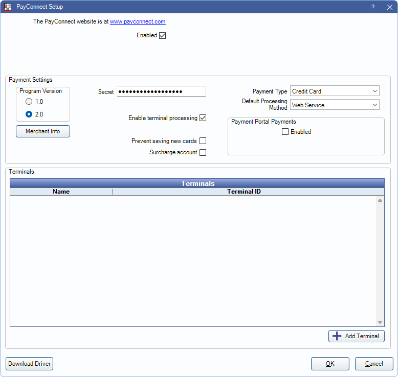

PayConnect Setup
PayConnect is an integrated Credit Card Payment program that can be used to process credit and debit card transactions.
In the Payment window, right-click on PayConnect, click Settings.

The screenshot above displays PayConnect 1.0.
Alternatively:
- During the first credit card transaction, on the payment window, click PayConnect.
- In Main Menu, click Setup, Program Links, and double-click Payconnect from dentalxchange.com.
Setup differs depending on if the practice or Clinic is signed up for PayConnect 1.0 or PayConnect 2.0
PayConnect 1.0
The interface shown in the screenshot at the top of this page appears when Program Version 1.0 is selected.
Enabled: Check to use PayConnect as a processor when taking Credit Card Payments.
Clinic: Only displays when the Clinics feature is enabled. See Clinics section below for additional setup details.
Payment Settings: Enter credentials and choose options to use PayConnect.
- Program Version: Choose 1.0 if signed up for PayConnect 1.0.
- Userame: Enter the username supplied by PayConnect
- Password: Enter the password supplied by PayConnect.
- This password is typically the same as the password for DentalXChange ClaimConnect if you also use that service.
- User must have the Manage High Security Properties permission to edit or add a password.
- Enable terminal processing: Check to use a credit card terminal for EMV transactions. Contact PayConnect for information on compatible terminals.
- The Download Driver button will display. Click to download and install the terminal driver (VeriFoneUSBUARTDriver_Vx_1.0.0.52_B5.zip). An internet connection is required. Once the driver is installed, contact PayConnect for additional setup instructions.
- If using Open Dental Cloud, download the driver on the workstation used to run payments.
- Recurring charges force duplicates by default: By default, transactions for the same amount charged to the same card on the same day are declined. This is to prevent accidentally charging a card twice. Check to allow duplicate charges. Useful if family members have recurring charges set up on the same card for the same day.
- Prevent saving new cards: Uncheck to allow users to process new transactions or save new payment information to a patient's account in Open Dental. Check to prevent users from processing new transactions or saving new payment information in Open Dental. This does not apply to payments processed through the Payment Portal Feature.
- To set whether or not new credit and debit cards are saved to a patient's account after each transaction, see Preferences, Automatically store credit card tokens.
- Payment Type: Select the default Payment Type for PayConnect transactions.
- Customize available options in Definitions: Payment Types.
- Set the preference Pay type for CC to set a specfic Payment Type for CC Recurring Charges.
- If the preference, Payments prompt for Payment Type, is enabled, users must manually select a Payment Type when creating a payment.
- Default Processing Method: Select the default processing method: Web Service or Terminal.
- Payment Portal Payments: Determine if patients can make online payments via the Payment Portal.
- Enabled: Check to allow patients to make online payments using the PayConnect Web Service via the Payment Portal.
- Token: Click Generate to create a token. This is used by the Web Service when processing payments.
Click OK to save settings.
PayConnect 2.0
The interface shown in the screenshot below appears when Program Version 2.0 is selected.
Enabled: Check to use PayConnect as a processor when taking Credit Card Payments.
Clinic: Only displays when the Clinics feature is enabled. See Clinics section below for additional setup details.
Payment Settings: Enter credentials and choose options to use PayConnect.
- Program Version: Choose 2.0 if signed up for PayConnect 2.0.
- Merchant Info: Only appears when a Secret is entered. Click to validate and display Merchant Information from PayConnect.
- Secret: Enter the alphanumeric Secret key provided by PayConnect.
- Enable terminal processing: Check to use a credit card terminal for EMV transactions. To add a credit card payment terminal, see Edit Payment Terminal section below. When checked click Download Driver below Terminals list to install terminal drivers.
- Prevent saving new cards: Uncheck to allow users to process new transactions or save new payment information to a patient's account in Open Dental. Check to prevent users from processing new transactions or saving new payment information in Open Dental. This does not apply to payments processed through the Payment Portal Feature.
- To set whether or not new credit and debit cards are saved to a patient's account after each transaction, see Preferences, Automatically store credit card tokens.
- Surcharge Account: Check if using a Surcharge Account.
- Payment Type: Select the default Payment Type for PayConnect transactions.
- Customize available options in Definitions, Payment Types.
- Set the preference Pay type for CC to set a specfic Payment Type for CC Recurring Charges.
- If the preference, Payments prompt for Payment Type, is enabled, users must manually select a Payment Type when creating a payment.
- Default Processing Method: Select the default processing method: Web Service or Terminal.
- Payment Portal Payments: Determine if patients can make online payments via the Payment Portal.
- Enabled: Check to allow patients to make online payments using the PayConnect Web Service via the Payment Portal.
Terminals: Lists names and Terminal IDs of all credit card terminal devices added for use with PayConnect.
Add Terminal: Click to add a new terminal. See Edit Payment Terminal below. Contact PayConnect for information on compatible terminals.
Click OK to save settings.
Edit Payment Terminal
For PayConnect 2.0 users, double-click an existing terminal from the Terminals grid to edit or click Add Terminal to create add a new terminal.

Terminal Name: Enter a description for the credit card terminal.
Terminal ID: Enter the serial number associated with the credit card terminal device.
Click Delete to remove an existing terminal.
Click OK to save changes.
Clinics
Clinics can use different PayConnect login credentials for each Clinic in a single database.

To use PayConnect with Clinics:
- Check Enabled (affects all clinics) to enable PayConnect for all clinics.
- Unchecking disables PayConnect for all clinics.
- Clinic-restricted users only have access to their allowed clinics in the Clinic dropdown and are not allowed to uncheck the Enabled box.
- Set Clinic Payment Settings for Headquarters before setting individual Clinic settings.
- Select Headquarters from the Clinic dropdown.
- Set up options for PayConnect 1.0 or PayConnect 2.0 as applicable (see above).
- Editing the Headquarters credentials when it is the same as one or more clinics, changes the other clinics as well. To unlink them, change the username and password for each clinic. Subsequent changes made to Headquarters credentials will no longer affect the clinic.
- Set Clinic Payment Settings for individual Clinics.
- Select a clinic from the Clinic dropdown.
- Set up options for PayConnect 1.0 or PayConnect 2.0 as applicable (see above).
- Repeat steps for each additional clinic in the dropdown.
- Headquarter settings will be used if clinic-specific changes are not made.
- For clinics not using PayConnect, select the clinic, then clear the username and password. When the clinic is attached to a payment, the PayConnect button will not be visible.